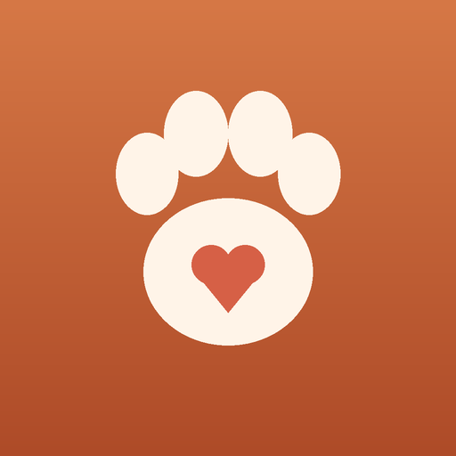

Дневник здоровья собаки и кошки для iPhone и Android. Прививки, обработки, таблетки, вес и напоминания в одном месте. Бесплатно, без регистрации, работает без интернета.
Внутри приложения нажмите «Установить на экран» — оно подскажет, что делать
Именно в Safari, а не внутри Telegram или WhatsApp. Если ссылка открылась в мессенджере, нажмите «⋯» или значок компаса и выберите «Открыть в Safari».
Это квадрат со стрелкой вверх внизу экрана (на новых iPhone он может быть в меню «⋯»).
Прокрутите меню вниз, если не видите этот пункт. На экране появится иконка «Лапки».
В первый раз — при включённом интернете, чтобы приложение сохранилось в телефон. Дальше оно работает без сети.
Если ссылка открылась внутри мессенджера, нажмите «⋮» и выберите «Открыть в Chrome».
Пункт может называться «Добавить на главный экран». Иногда Chrome сам показывает внизу кнопку «Установить».
В первый раз — с интернетом. Дальше приложение работает без сети.
Выберите собаку или кошку, добавьте фото, кличку, породу и дату рождения. Выберите цвет приложения — у каждого питомца он свой.
Нажмите большую кнопку ＋ внизу → выберите тип (прививка, клещи, глисты…) → «Уже сделано» → дату. Под названием есть готовые препараты — нажмите на нужный, и интервал повтора подставится сам.
Например, таблетка от клещей «раз в 35 дней». Приложение само посчитает следующую дату и покажет её на главной.
Кольцо показывает, сколько дней до ближайшей процедуры. «Защита» — сколько ещё действует обработка от клещей, глистов и прививка: зелёный — всё хорошо, оранжевый — скоро, красный — просрочено.
Запись попадёт в журнал, а следующая дата посчитается автоматически. Питомец гавкнет или мяукнет 🙂
Нажимайте лапки 🐾 после прогулок (у кошек — клубки 🧶 после игр). Вес вносите раз в месяц — увидите график.
На iPhone откроется список событий — нажмите «Добавить все». На Android скачается файл — откройте его и выберите «Google Календарь». Календарь напомнит за день и в день процедуры. Время напоминания выбирается там же.
Календарь не обновляется сам, поэтому после новых планов снова нажмите «Добавить в Календарь».
Добавьте ещё собаку или кошку. Переключайтесь между ними, нажимая на аватарки вверху. У каждого свои записи, календарь и цвет.
При установке на иконке будет фото и кличка питомца, который выбран в этот момент. На Android иконка всегда «Лапки». Хотите другое фото — выберите питомца и установите иконку заново (см. «Резервная копия» ниже, чтобы не потерять данные).
Сохраните файл в «Файлы» или отправьте себе в мессенджер.
Установите приложение → «Восстановить из копии» (или «Питомец» → «Загрузить») → выберите файл. Все питомцы и записи появятся.
Данные о питомцах хранятся только в вашем телефоне. Сайт собирает обезличенную статистику посещений (Яндекс Метрика), чтобы я понимал, сколько людей пользуется приложением.
Интервалы в шаблонах ориентировочные — схему прививок и обработок уточняйте у вашего ветеринара.
🐾 Лапки